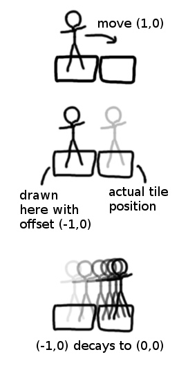
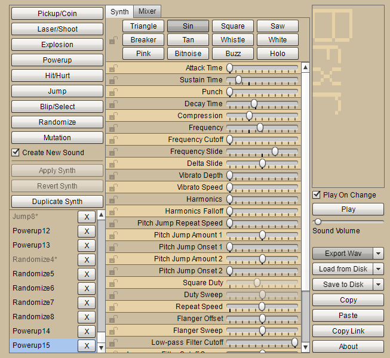
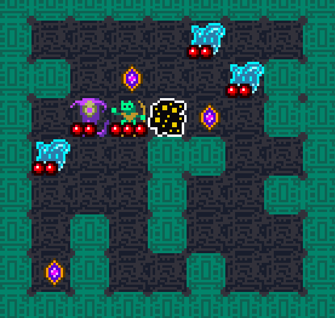

Stage 7 - Animation, Screenshake, & Sounds
Turn based movement without animation is not only a bit boring, but it also makes deciphering gameplay difficult. Monsters jump all over the screen and it's impossible to tell exactly what's happening.
Luckily, smoothing turn based movement is a piece of cake. When a monster moves from one tile to another, we start out by drawing them immediately in the new tile BUT with an
and
that represents the gap between the old and new position. So for the very first instant after movement, the offsets make the monster appear to be at their old tile, even though their "official" position is at their new tile.
Each frame, we reduce the offsets and in doing so, the sprites slide into place. When the offsets reach 0, sprites appear precisely at the their actual position.

monster.js
We initialize the offsets to 0 and then when moving, we calculate them as the difference between the old tile and the new tile position. Say you move to the right 1 tile. You've moved +1 in the X direction, so this code will set the offset to -1. That way you'll start out being drawn to the LEFT of your new tile position (the opposite direction you moved in).
Let's start adding in those offsets.
monster.js
We're adding two new functions called
and
which will return a monster's
apparent position. I say "apparent" because in a grid based game like this each monster is only ever positioned exactly on a specific tile for gameplay purposes. Once adding these wrapper functions, we just need to replace all the instances where the
and
tile coordinates were referenced directly.
Now here's the magic, the code that actually animates these offsets:
monster.js
During each draw call, we're reducing the value of the offsets by one eigth of a tile, which is what produces the sliding animation.
produces either -1, 0, or +1 if passed a negative, zero, or positive number respectively. This lets us move in the correct direction if the offset is still non-zero and completely stop altering the offset if it is zero.
Something interesting to note here is this actually won't work with a value like 0.1 instead of 0.125 (i.e. 1/8) because of floating point math. If you type
into the console instead of
you'll get
.
Floating point numbers can only be represented precisely if they are powers of two (e.g. 1/2, 1/4, 1/8). Obviously we could have written this to accomodate any kind of number with more code, but it's nice to do it all in only two lines.
Bump attack
With that, basic animation between tiles is in place. And just two extra lines can add a bump attack animation.
monster.js
When bump attacking, monsters are not really moving between tiles. Instead we're setting their offset so that the moment after attack they'll appear partially
in the tile they're attacking. That's why we divided by 2. We want the monster to look like they've jumped halfway into their opponent's tile to give them a wallop.
Screenshake
Screenshake uses a similar concept to offset animation: draw things in their proper place and then just tack on some additional offsets. And also reduce the value of those offsets every frame until they're 0 (the screenshake should quickly fade out).
In the case of screenshake, the offsets are random and they will apply to
everything on screen. This lets us do our screenshake offset in a single place:
.
We'll start out declaring a
variable for the magnitude of the shake and two component variables
and
.
All are assigned 0 because of course we don't want to start out shaking.
index.html
After each monster hit, we add some shake.
monster.js
The part that actually affects what you see is here in
.
Remember that the 6th and 7th arguments to
are for the destination X & Y coordinates (where on screen to draw).
Adding
and
does the job.
Then we'll add a new
method that will handle splitting out
into X & Y components and damping the amount.
game.js
The
is reduced by 1 every frame unless it's already 0. Notice this is yet another example here of type coercion. 0 gets coerced into
and any other number gets coerced into
.
The next part uses some basic
trigonometry. A quick refresher in case you forgot your trig classes: if you provide an angle,
cosine will tell you big the X component is and
sine will tell you how big the Y component is. Our JavaScript trig functions deal in
radians instead of degrees, which is why we'll be referencing
radians (the number of radians in a circle) instead of say
360 degrees.
We select a random
and then use
and
to find the X & Y components. We multiply by the
and finally
off to ensure there is no sub-pixel nonsense going on (that can look really bad).
Our screenshake is pretty subtle, but for fun try setting the
on hit to a ridiculously high amount like 50 or higher and see what happens.
Sounds
To really polish things up, we need sound!
We're going to make 5 sounds, from scratch:
- hit1.wav: when the player hits a monster
- hit2:wav: when a monster hits the player
- treasure.wav: when the player picks up a treasure
- newLevel.wav: when the player exits a level
- spell.wav: when a player casts a spell
To make our sounds, we're going to use a tool called Bfxr.

Now this might look an overwhelming monstrousity (audio software always is). But I promise it's the easiest game development tool I've ever used and creating very nice sounds can be done in a couple button clicks.
First navigate to
bfxr.net. You might have to fiddle around with your Flash settings to get it to launch.
Really all you need to do is click one of the buttons in the upper left. The rest of the UI is for tweaking those sounds further, but that's optional. Our first sound "hit1.wav" can be generated with the
Hit/Hurt button. We can continue to click that button to generate new sounds until we get one we like. You'll also find the buttons
Powerup and
Jump useful for the other types of sounds we want to generate.
If you want to try out some customization options, the easiest one to start would be
Mutation which mutates your current sound randomly. Selecting different synths is also pretty straightforward. I find
Sin to be the softest option and it's great for soothing electronic noises like boops and beeps.
White is great for static and rough sounding noises like explosions.
After you're done, simply select
Export Wav, name the file according to our naming scheme shown earlier, and save it into our project under a "sounds" folder.
Generate the 5 sounds and then we'll get back into coding.
To play audio in the browser we use the
API. We'll create a new
object passing the audio URL and then call
on it.
index.html
game.js
We immediately call
to load our 5 sounds and store them in a global object called
.
To play a sound, we call
with the desired sound name. The only oddity is
. Without resetting this to 0, trying to play a sound that's already in the progress of playing (like hitting a bunch of enemies quickly) sounds terrible.
Now let's call
in 4 places (the "spell" sound will be covered in the next section):
monster.js
tile.js
Now the game is really starting to look and sound like something nice!

For our last addition, we'll add spells in the
next section.